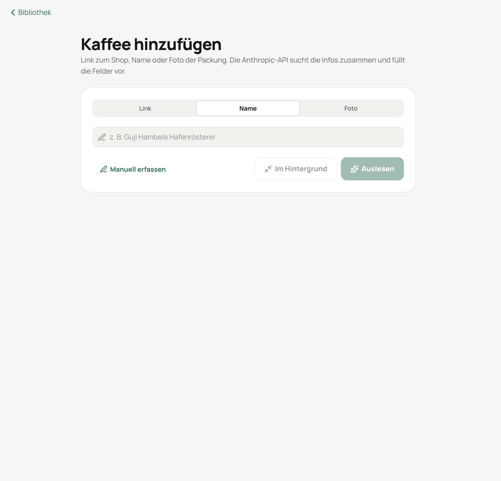
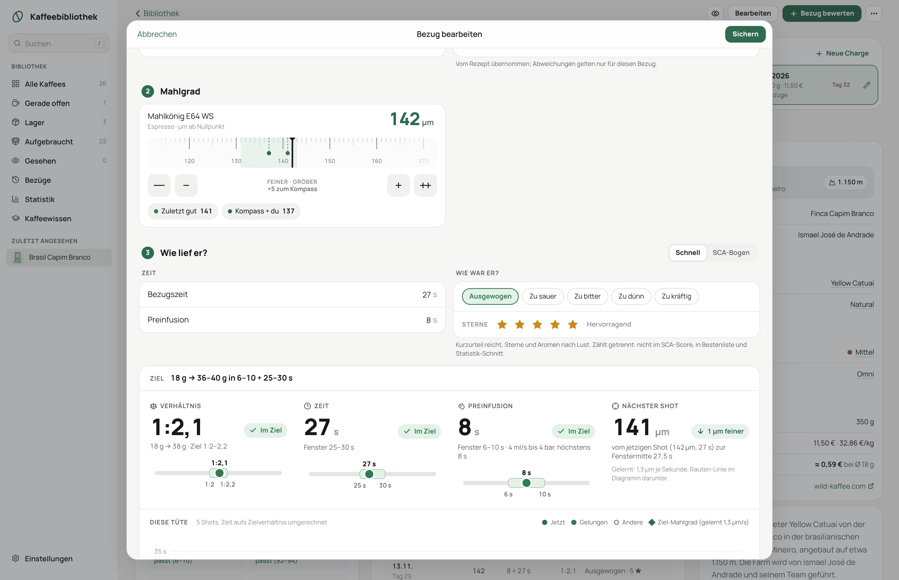
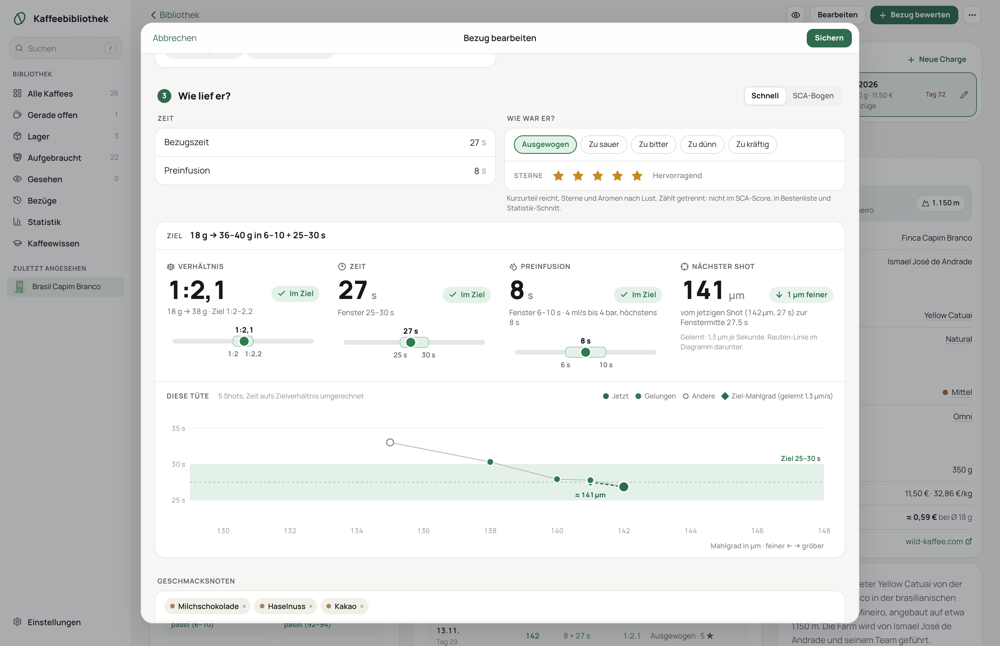
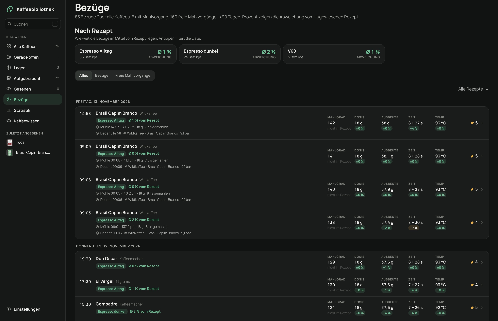
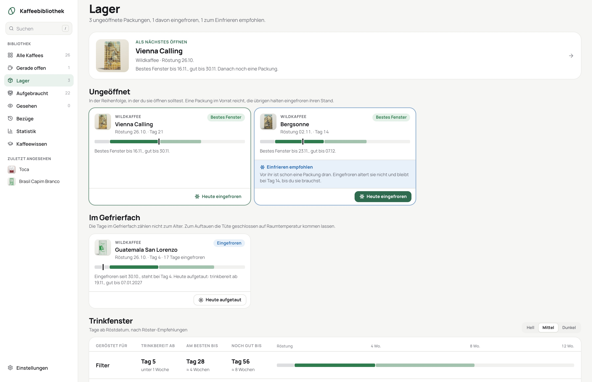
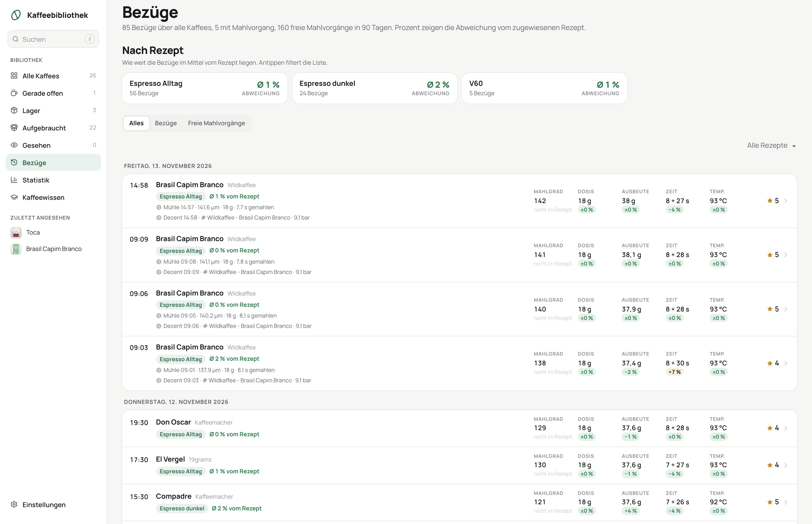
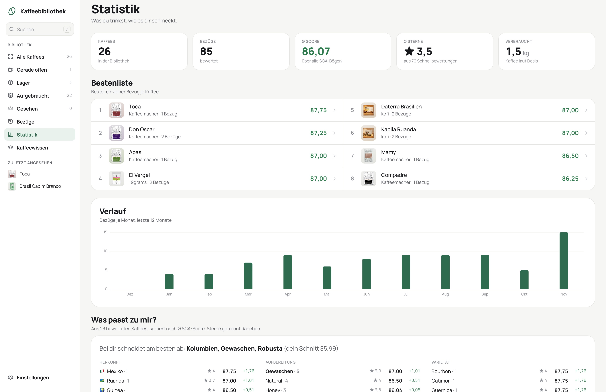

Kaffeebibliothek
Your coffees as a library, and an espresso setup that thinks along. The app reads in new coffees by itself, pulls every grind from the grinder and every shot from the machine, and tells you where the grind setting has to go for the next shot. With reasons, in microns.
- One container
- SQLite
- No account, no tracking
- Mahlkönig E64 WS
- Decent DE1
- Home Assistant
- Dark mode
- Automatic cut-out
The app's interface is in German.

A coffee is in within seconds
A shop link, a name or a photo of the bag is enough. The Anthropic API searches the web, reads the pages and fills in origin, variety, process, altitude, roast level, flavour notes and price. You see live which page is being read and which field is already set.
The bag image is aligned and cut out automatically, so the shelf looks like a shelf. Roasters are merged across spellings. Without an API key, everything works by hand.

Keep browsing while it reads
Reading in runs as a job on the server. Leave the page, reload or lock your phone: the bottom right shows what it is working on, and a notification tells you when it is done. One click on "Review" opens the finished draft.

Doesn't guess, calculates
Every new bag gets a starting point on your grinder's scale: fixed rules for roast level, filter or espresso, altitude, process, decaf and roast age, plus whatever the app has learned from your own bags.
- Learns locally: ridge regression over your bags, cross-validated bag by bag, no cloud
- Follows every shot: time converted to the target ratio and translated into µm via the learned slope
- Tastes along: sour or bitter nudges the value per coffee, with a brake
- Traceable: the compass path shows every contribution on its own

All you say is how it tasted
- Mahlkönig E64 WS: grinds straight from the grinder's web interface on your home network, read-only. Optionally via Mahlkönig Sync
- Decent DE1: a plugin for the de1app sends every shot with pressure, flow and weight curves, plus the whole archive
- A profile per coffee: preinfusion, temperature and stop weight matching the target, synced with the tablet. Existing profiles stay untouched
- Home Assistant: temperature, water and state live, machine and steam switchable
Tuned for Decent and Mahlkönig, open to more: any machine or grinder that can hand over its shots or grinds can be connected. Got one? Open an issue.
Grind and shot are paired by time. The dialog shows ratio, time, preinfusion and the next grind setting large, against your target window.

As detailed as you like
Quick with a verdict ("too sour", "balanced") and stars, or in full with the SCA cupping form and flavour wheel. Both are counted separately, so stars never water down scores.



Looks just as good at night
Dark mode follows the system; every page is built for both modes, from 390 to 1728 px.


Technology you don't see
Cut out automatically
Background colour from the image border, flood fill from the outside, shadows become semi-transparent instead of being cut hard. Light bags without an outline stay whole.
Aligned automatically
The bag is found as an outline and placed on a square with fixed margins. Every bag stands the same size on the shelf.
Live reading
The Anthropic API response arrives as an NDJSON stream: web search, pages read and half-finished fields appear right away.
Ridge regression
The compass only learns the deviation from fixed rules, λ via leave-one-bag-out. The very first bag is already usable.
Hopper ageing
The slope in µm per second is sharpened from shots of the same bag, with days since the first shot taken into account.
Pairing by time
Shot and grind find each other by time, tolerant of clocks that differ. Pick one, the other comes along.
Grinder database
The E64 WS hands over its SQLite database through its web interface. Purges, idle runs and pre-grinding are dropped; nothing is changed on the grinder.
Decent plugin in Tcl
Shots, archive and profiles in both directions, the legacy format is parsed on the server. Existing profiles stay untouched.
Consistent backups
ZIP from its own code, the database via VACUUM INTO while running. SQLite through node:sqlite, no native dependency.
Stock, brews, statistics




Thought through to the last detail
SCA form or quick
Verdict and stars for every day, the full cupping form with flavour wheel when it matters. Evaluated separately.
Batches, not leftovers
Every bag with roast date and status. No weighing, no bookkeeping.
What suits me?
A profile from your ratings; on request, the Anthropic API looks for something new at your roasters.
First steps
A guided setup walks through every setting on first launch: required, optional, recommended.
Backups
A ZIP with database and images at the push of a button and every night, with adjustable retention.
At home everywhere
Installable on phone and desktop, dark mode by system, built from 390 to 1728 px.


Your data stays with you
One container, one SQLite file, one image folder. No account, no tracking. Only what you switch on leaves your network: the Anthropic API for reading in and, optionally, Mahlkönig Sync.

Up and running in 2 minutes
git clone https://github.com/Yatheria030/kaffeebibliothek.git cd kaffeebibliothek docker compose up -d --build
Then open http://localhost:8790. Without Docker: npm ci && npm run build && npm start with Node 24.
Everything else is in the README.